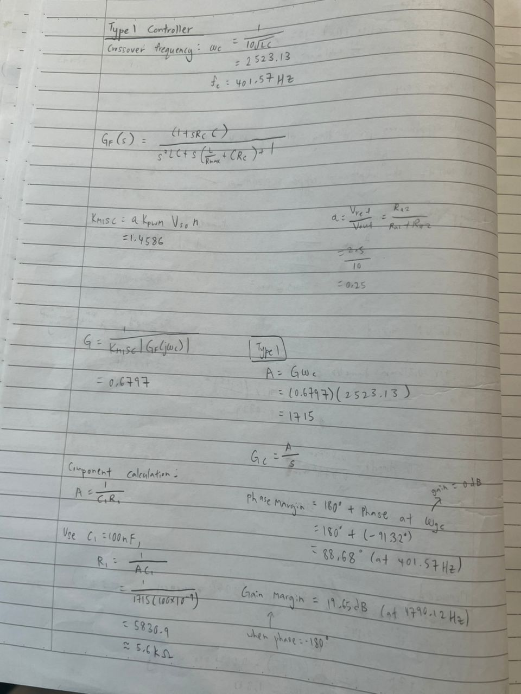

2026.02–2026.05
双开关正激变换器
完成 50 W 变换器的建模、控制设计与实验验证。
电力电子 · 控制 · PLECS

项目背景与目标
待补充：项目需要解决的具体问题、约束条件和目标。
工作内容与方法
设计高频变压器与输出 LC 滤波器，基于小信号模型设计 Type III 补偿器，使用 PLECS 分析寄生参数影响。
成果与验证
实现 35 V DC 至 10 V / 5 A 变换；实验稳压输出 10 V ±1%，满载纹波约 0.1 V。
设计计算记录



电路设计与调试


负载变化测试视频
使用播放器查看测试过程；具体工况与测量说明待补充。
后续补充资料
待补充：个人分工，以及视频中的负载变化范围与测量条件。
总结与收获
待补充：遇到的困难、关键选择，以及学到的方法。
← 返回项目列表